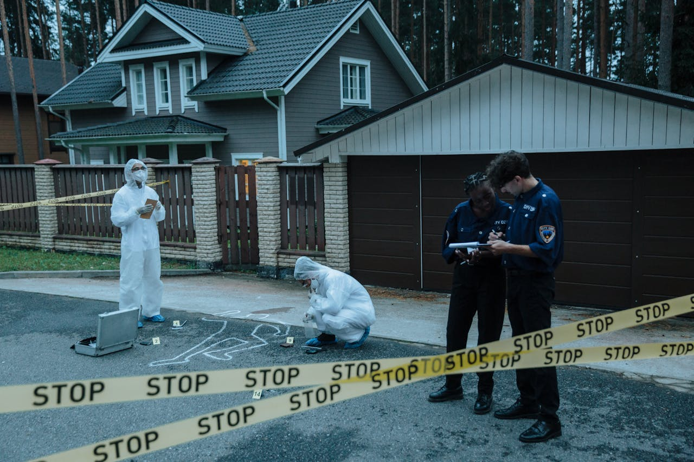

Cały zespół Wydziału Spraw Niewyjaśnionych Komendy Głównej Policji.

Prezentacja medalu przyznanego przez prezydenta miasta Warszawy.


Zespół w trakcie śledztwa
Zespół analizuje dowody w sprawie kryminalnej.

Zabezpieczanie miejsca zbrodni
Zabezpieczanie śladów na miejscu zbrodni przez funkcjonariuszy.

Spotkanie z prokuratorem
Spotkanie zespołu z prokuratorem w sprawie niewyjaśnionych przestępstw.

Służba patrolowa
Funkcjonariusze na służbie patrolowej w rejonie miasta.

Zabezpieczanie dowodów cyfrowych
Funkcjonariusze zajmują się zabezpieczaniem dowodów cyfrowych w sprawie kryminalnej.